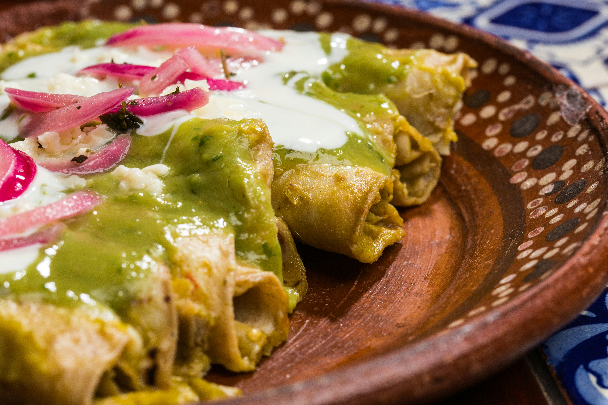

Green Chicken Enchiladas
Home

Photo by Daniel Lloyd Blunk-Fernández on Unsplash
Description
One of my go-to dishes every time I go to a Mexican restaurant are green chicken enchiladas. I guess you can say it's the criteria I use to decide how much I like a restaurant. Despite my love for these enchiladas, I have yet to be able to make a decent replica at home. Sure I have tried several variations from different content creators, but nothing which has really wowed me. However, I can confidently say that all the recipes I've tried have helped satiate my craving.
Ingredients:
- 2 lbs chicken (breast or thigs)
- 20 corn tortillas
- 15 tomatillos, boiled
- 2 serranos or jalapenos
- 1 chile poblano, roasted and peeled
- 1/2 onion
- 3 garlic cloves
- 8 oz cream cheese, room temperature
- 1 tin media crema
- 1 cup water or crema mexicana
- Bunch cilantro
- 2 tsp salt
- 1 tsp black pepper
- 1/4 tsp oregano
- 1/4 tsp cumin
- Queso Oaxaca
Steps:
- Thinly slice the chicken into about 1/2 inch cutlets. Cover with oil and season with salt and pepper.
- Cook in a medium heat pan until chicken reaches internal temperature of 165. You may have to cook in batches. Once the chciekn cooks, set aside in a separate plate and cover with foil while cooking the remaining chicken.
- Once all the chicken has been cooked, allow to rest for about 10 minutes. Once cool enough to be handled, shred chicken into a bowl.
- Using a pan or comal, heat some oil and gently fry each tortilla until soft. Roll with shredded chicken and set aside while we make the sauce.
- To a blender, add the boiled tomatillos, 2 serranos or jalapenos, roasted and peeled chile poblano, onion, garlic cloves, cream cheese, media crema, water or crema mexicana, cilantro, salt, black pepper, oregano, and cumin.
- Preheat a pan to medium heat. Once hot, add half of the sauce to the blender into the pan. Bring to a simmer and make sure to taste and adjust for seasoning if needed.
- Once sauce has come to a simmer, you can place rolled enchiladas directly into pan if large enough, or transfer sauce to a new pan and place enchiladas in the sauce.
- Cover with the remaining sauce. Add Oaxaca cheese to the top and heat in oven or covered with lid on the stovetop until cheese is melted.